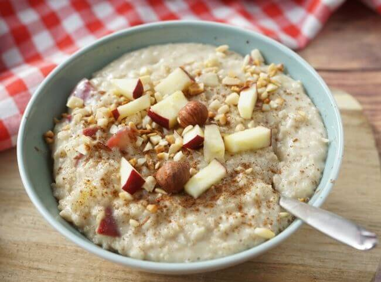

Porridge

Description
Porridge is the typical English breakfast recipe; quick and easy: a sweet oatmeal to start the day with
the right amount of energy! Oat flakes are cooked in water, milk and honey until creamy.
This base can be enriched each time with different ingredients such as yoghurt, fresh fruit,
dried fruit, chocolate, coconut or jam, or with vegetables and eggs for a savoury porridge.
A complete and wholesome food with which to sweeten your awakening and stock up on nutrients,
essential for the well-being of young and old, workers and students. Customise the recipe to your
liking, maybe even try variations like apple and hazelnut porridge or blueberry and pistachio porridge,
and enjoy a different version every day! After all, isn't breakfast the most important meal of the day?
Ingredients
- Oat Flakes, 160g
- Water, 160g
- Salt, just a bit
- Full milk, 200g
- Wildflower honey, one spoon
To garnish
- Natural white yoghurt, two spoons
- Dark chocolate chips, q.s.
- Strawberries, q.s.
- Maple syrup, q.s.
Steps
How to prepare Porridge
- To prepare the porridge, pour the oat flakes into a saucepan
- together with the water and milk
- add the salt and the honey
- then cook over a gentle heat for 2-3 minutes, stirring with a spoon
- You should achieve a soft, non-sticky consistency.
- Meanwhile, prepare the ingredients for the garnish: you can use strawberries,
kiwi, chocolate, almonds, yoghurt, honey, jam, etc. We suggest this version:
pour the porridge into bowls and garnish with yoghurt and strawberries
- Enrich with maple syrup and dark chocolate chips
- Alternatively, you can opt for a version with berries and dark chocolate chips,
or with kiwi, almonds, raspberry jam and honey. Let your imagination guide you and enjoy your
porridge
now.